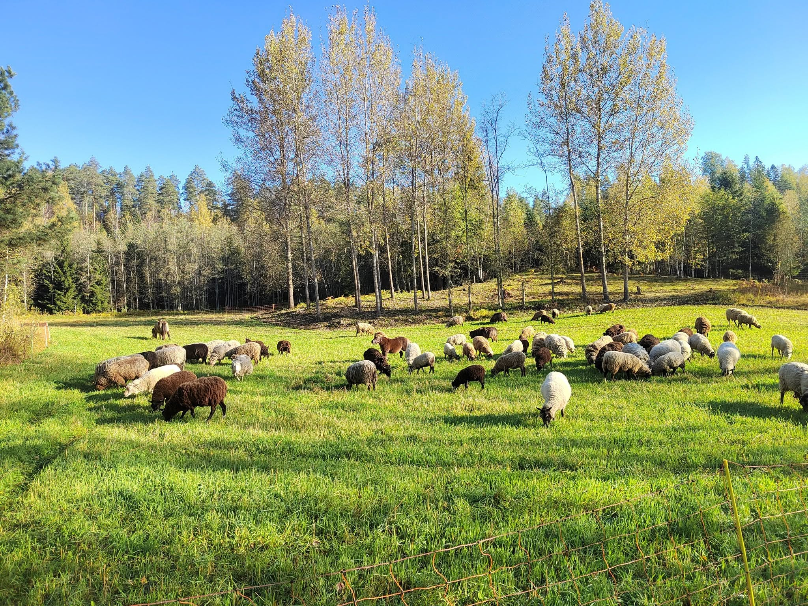
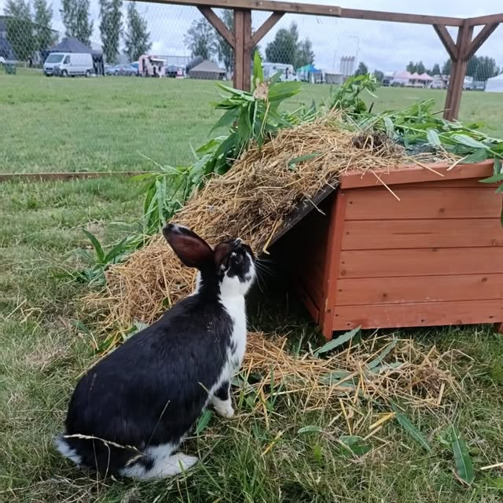

Sankolan kylä · Lammi, Hämeenlinna
Suomenlampaita, hunajaa ja tilaelämyksiä Sankolassa
Metsälän tilalla kasvatetaan suomenlampaita perinteiseen tapaan, vailla teollista ruokintaa. Tarjoamme myös hunajaa, kananmunia, käsitöitä ja tilaelämyksiä koko perheelle.
Tarinamme
Hieman erilainen pieni maatila Hämeen sydämessä
Olemme ylpeästi hieman erilainen pieni maatila Hämeenlinnan Lammilla, Sankolan kylässä. Tilamme sijaitsee Porkkalan kartanon kupeessa, harjujen suojassa, Kaurastenjärven rannalla. Kasvatamme tilallamme suomenlampaita perinteiseen tapaan, vailla teollista ruokintaa ja maksimaalisen lihantuotannon tavoitteita.
- Suomenlampaat elävät lajityypillisesti, laiduntaen vapaasti
- Tilan toimintaan kuuluu myös maiseman ja luonnonhoito
- Tilan eläimet vierailevat myös tapahtumissa ja tilaisuuksissa

Palvelumme
Paljon muutakin kuin lampaita
Tarjoamme luonnonlaidunlihan suoramyynnin lisäksi maiseman ja luonnonhoidon palveluita, kesälammasvuokrausta, eläimiä tapahtumiin ja vierailuihin, talutusratsastuspalveluita sekä aitausurakointia. Käsityöt ja erilaiset kausituotteet löytyvät pihamyymälästämme.
Valikoimastamme
Tuotteita suoraan tilalta
Luonnonlaidunliha
Suomenlampaan lihaa suoraan tilalta, kasvatettu ilman teollista ruokintaa.
Käsityöt ja kausituotteet
Villatuotteita, puukäsitöitä ja muita käsintehtyjä tuotteita pihamyymälästä.
Hunaja ja kananmunat
Omaa hunajaa ja kananmunia, sekä luonnonkosmetiikkaa ja säilykkeitä.
Arvomme
Miten pidämme tilasta huolta
Lajityypillinen elämä
Lampaamme laiduntavat vapaasti, ilman teollista ruokintaa.
Maiseman hoito
Tarjoamme maiseman ja luonnonhoidon palveluita alueen ympäristöille.
Elämyksiä koko perheelle
Tilan eläimet tuovat iloa vierailuihin ja tapahtumiin ympäri vuoden.
Monipuolinen tila
Yhdistämme perinteisen maatalouden käsityöhön ja tilaelämyksiin.
Kuvia tilalta
Katso millaista arki on Metsälässä
Tervetuloa tutustumaan tilaamme!
Poikkea pihamyymälässä pe-su, tai sovi vierailu muina päivinä.
Yhteystiedot
Tule käymään tai ota yhteyttä
-
Kaurastentie 66, 16900 LammiSankolan kylä, Hämeenlinna
-
050 349 6653Soita tai laita viestiä
-
metsalantila@gmail.comVastaamme mielellämme
-
Metsälän TilaAjankohtaiset kuulumiset Facebookissa